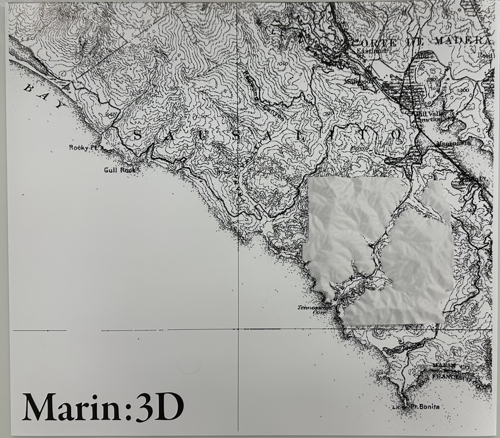
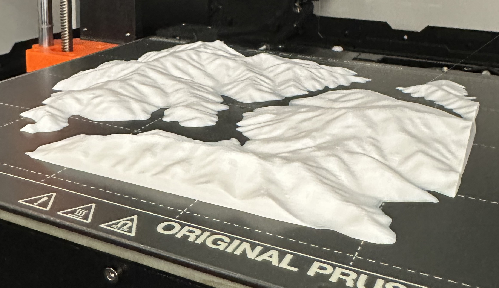
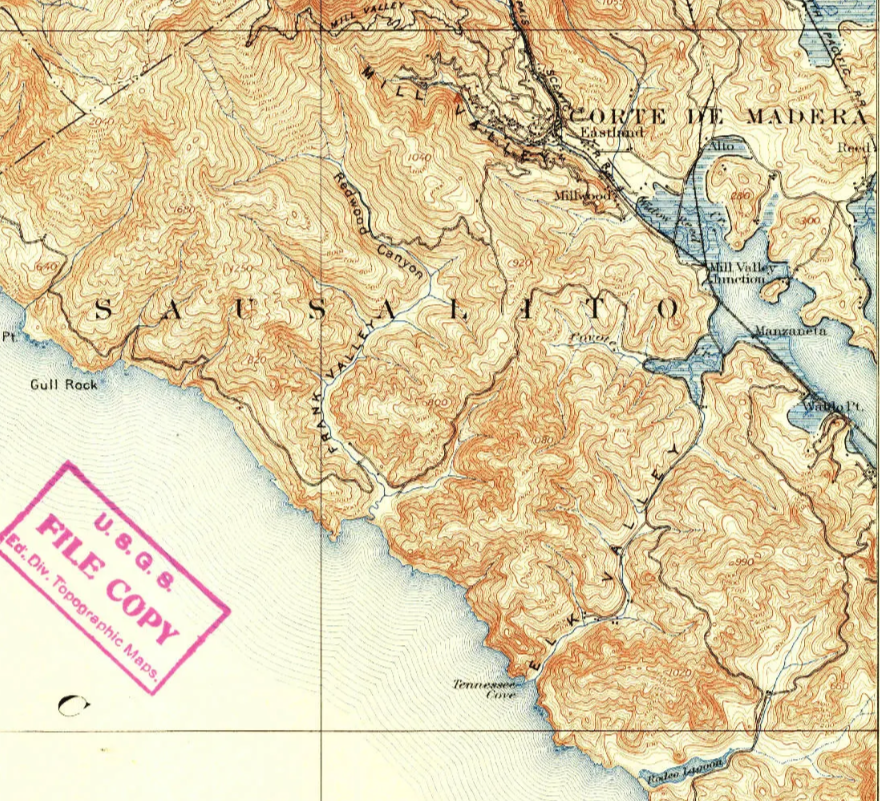
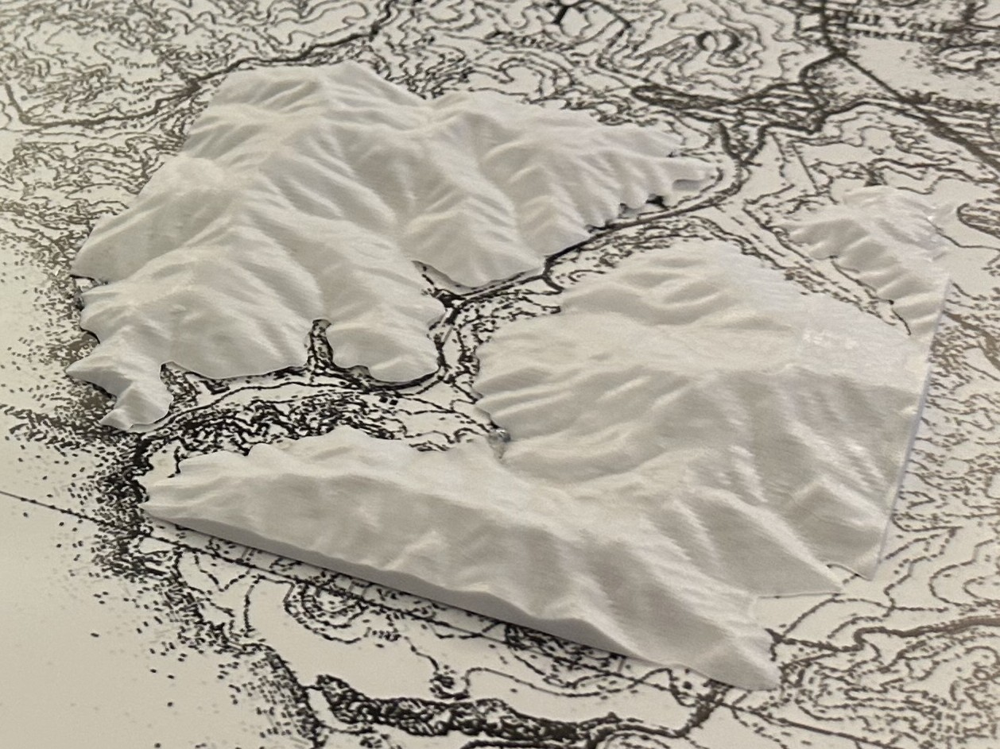

overview
A physical translation of Marin County's coastal topography into a tactile relief map, exploring how cartographic data can be experienced through touch and form rather than visual abstraction alone. Traditional topographic maps rely heavily on the ability to mentally translate contour lines into three-dimensional space. By converting 2D contour lines into a 3D printed terrain model, this project questions who gets to access geographic information and how alternative representations can create more inclusive ways of understanding landscape.
process
The project began with downloading a Digital Elevation Model (DEM) from OpenTopography as a GeoTIFF, which was then imported into QGIS and processed using the HCMGIS and Qgis2threejs plugins to convert the 2D heightmap into a 3D mesh exported as a .glb file. That mesh was refined in Blender, exported as an .stl, and sliced in PrusaSlicer before being printed on a Prusa MK4S in white PLA. In parallel, a 1950 USGS topographic map of the Tennessee Valley region was sourced from TopoView, edited in Photoshop with threshold adjustments and masking, and printed on satin poster paper using an HP DesignJet Z9+ plotter.
tools
QGIS




